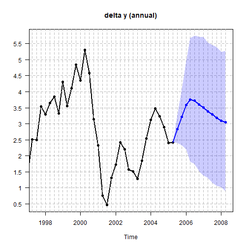
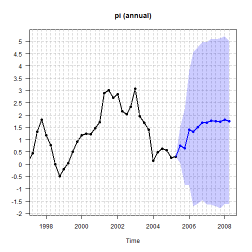
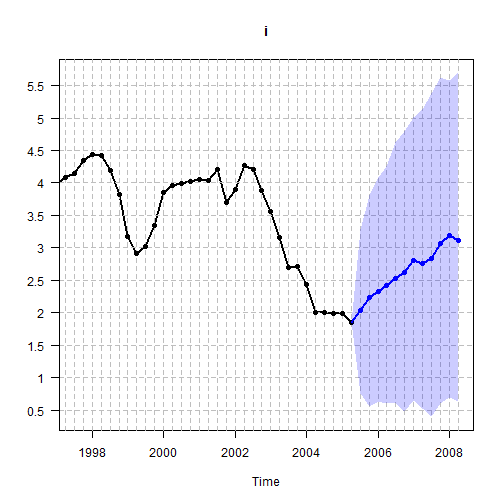
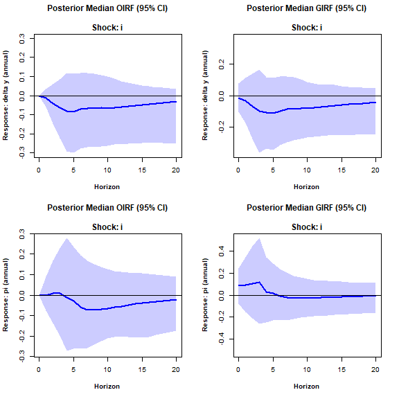

Homoscedastic steady-state BVAR (Villani, 2009)
Source:vignettes/Homoscedastic-steady-state-BVAR.Rmd
Homoscedastic-steady-state-BVAR.RmdHere we estimate the original (homoscedastic - i.e. constant innovation covariance matrix \(\Sigma_{u}\)) steady-state BVAR model from Section 4.1 of Villani (2009).
First, let us attach the package and load the data.
library(SteadyStateBVAR)
data("Villani2009")
yt <- Villani2009The data set contains quarterly data for Sweden over the time period 1980Q1–2005Q4. The seven variables are: trade-weighted measures of foreign GDP growth \((\Delta y_f)\), CPI inflation \((\pi_f)\) and the 3-month interest rate \((i_f)\), the corresponding domestic variables (\(\Delta y\), \(\pi\) and \(i\)), and the level of the real exchange rate defined as \(q=s+p_f-p\), where \(p_f\) and \(p\) are the foreign and domestic CPI levels (in logs) and \(s\) is the (log of the) trade-weighted nominal exchange rate. As such, we have
\[ y_t= \begin{pmatrix} \Delta y_f \\ \pi_f \\ i_f \\ \Delta y \\ \pi \\ i \\ q \end{pmatrix} \]
Also, we will leave out the last two observations, so the user can compare the forecasts produced here to the last forecasts seen in Figures 1-3 in Villani (2009) to verify that this implementation works correctly.

Also, let us create the bvar object which we will use throughout here.
bvar_obj <- bvar(data = yt)To model the Swedish financial crisis at the beginning of the 90s and the subsequent shift in monetary policy to inflation targeting and flexible exchange rate, \(d_t\) (deterministic variables at time \(t\)) includes a constant term and a dummy for the pre-crisis period, i.e.
\[ d_{t}' = \begin{cases} \begin{pmatrix}1 & 1\end{pmatrix} & \text{if } t \le 1992Q4 \\ \begin{pmatrix}1 & 0\end{pmatrix} & \text{if } t > 1992Q4 \end{cases} \]
To formulate a prior on \(\Psi\), note that the specification of \(d_t\) implies the following parametrization of the steady state:
\[ \mu_t = \begin{cases} \psi_1 + \psi_2 & \text{if } t \le 1992Q4 \\ \psi_1 & \text{if } t > 1992Q4 \end{cases} \]
where \(\psi_i\) denotes the \(i\):th column of \(\Psi\). We are now ready to set up the model. Although it is not mentioned which lag length is used in Villani (2009), we assume \(p=4\).
bvar_obj <- setup(bvar_obj,
p=4,
deterministic = "constant_and_dummy",
dummy = dum_var)Now let us specify the priors. We first consider \(\beta\) (Minnesota prior). We choose the same values for the hyperparameters as in Villani (2009), i.e. an overall tightness of \(\lambda_1=0.2\), a cross-equation tightness of \(\lambda_2=0.5\), and a lag decay rate of \(\lambda_3=1\). We then specify the prior means for the first own lags of the variables. We follow Villani (2009), and as such for variables in growth rates, we set the prior mean to \(0\), for variables in levels, we set the prior mean to \(0.9\).
lambda_1 <- 0.2
lambda_2 <- 0.5
lambda_3 <- 1.0
#fol_pm = first own lag prior means
fol_pm=c(0, #delta y_f
0, #pi_f
0.9, #i_f
0, #delta y
0, #pi
0.9, #i
0.9 #q
)Now moving on to \(\Psi\) for the steady-state priors, we set them according to the 95% prior probability intervals (normal distribution) in Table I in Villani (2009). We first note that for our data here, the growth rate variables (\(\Delta y_f, \pi_f, \Delta y, \pi\)) are specified in terms of quarterly rates of change/quarter-on-quarter growth, i.e. for a variable \(z\) which is on a quarterly frequency, the quarterly growth rate is \(100[ \ln (z_t) - \ln (z_{t-1})]\). The 95% prior probability intervals in Table I are specified in terms of annualized quarterly growth rates \(400 [\ln (z_t) - \ln (z_{t-1})]\).
The ppi() function is useful here. Simply input the
desired 95% prior probability interval (normal distribution) on the
annualized scale with annualized_growthrate=TRUE, and the
function returns the corresponding prior mean and variance on the
original scale (quarter-on-quarter growth). Of course, we could also
just annualize our data beforehand, and set
annualized_growthrate=FALSE. So now we do this for all
steady-state coefficients. Again, see Table I in Villani (2009) for the
95% prior probability intervals. The default argument for
ppi() is ‘interval=0.95’, but if we wanted for example 68%
prior probability intervals we could just set
interval=0.68.
#psi_1 = Psi col 1
#psi_2 = Psi col 2
theta_Psi <-
c(
ppi( 2.00, 3.00, annualized_growthrate=TRUE)$mean, #psi_1: delta y_f
ppi( 1.50, 2.50, annualized_growthrate=TRUE)$mean, #psi_1: pi_f
ppi( 4.50, 5.50, annualized_growthrate=FALSE)$mean, #psi_1: i_f
ppi( 2.00, 2.50, annualized_growthrate=TRUE)$mean, #psi_1: delta y
ppi( 1.70, 2.30, annualized_growthrate=TRUE)$mean, #psi_1: pi
ppi( 4.00, 4.50, annualized_growthrate=FALSE)$mean, #psi_1: i
ppi( 3.85, 4.00, annualized_growthrate=FALSE)$mean, #psi_1: q
ppi(-1.00, 1.00, annualized_growthrate=TRUE)$mean, #psi_2: delta y_f
ppi( 1.50, 2.50, annualized_growthrate=TRUE)$mean, #psi_2: pi_f
ppi( 1.50, 2.50, annualized_growthrate=FALSE)$mean, #psi_2: i_f
ppi(-1.00, 1.00, annualized_growthrate=TRUE)$mean, #psi_2: delta y
ppi( 4.30, 5.70, annualized_growthrate=TRUE)$mean, #psi_2: pi
ppi( 3.00, 5.50, annualized_growthrate=FALSE)$mean, #psi_2: i
ppi(-0.50, 0.50, annualized_growthrate=FALSE)$mean #psi_2: q
)
Omega_Psi <-
diag(
c(
ppi( 2.00, 3.00, annualized_growthrate=TRUE)$var, #psi_1: delta y_f
ppi( 1.50, 2.50, annualized_growthrate=TRUE)$var, #psi_1: pi_f
ppi( 4.50, 5.50, annualized_growthrate=FALSE)$var, #psi_1: i_f
ppi( 2.00, 2.50, annualized_growthrate=TRUE)$var, #psi_1: delta y
ppi( 1.70, 2.30, annualized_growthrate=TRUE)$var, #psi_1: pi
ppi( 4.00, 4.50, annualized_growthrate=FALSE)$var, #psi_1: i
ppi( 3.85, 4.00, annualized_growthrate=FALSE)$var, #psi_1: q
ppi(-1.00, 1.00, annualized_growthrate=TRUE)$var, #psi_2: delta y_f
ppi( 1.50, 2.50, annualized_growthrate=TRUE)$var, #psi_2: pi_f
ppi( 1.50, 2.50, annualized_growthrate=FALSE)$var, #psi_2: i_f
ppi(-1.00, 1.00, annualized_growthrate=TRUE)$var, #psi_2: delta y
ppi( 4.30, 5.70, annualized_growthrate=TRUE)$var, #psi_2: pi
ppi( 3.00, 5.50, annualized_growthrate=FALSE)$var, #psi_2: i
ppi(-0.50, 0.50, annualized_growthrate=FALSE)$var #psi_2: q
)
)Finally for \(\Sigma_u\) we will use
the noninformative Jeffreys prior \(\left|\Sigma_u \right|^{-(k+1)/2}\), as
done in Villani (2009). We simply pass everything to the
priors() function.
bvar_obj <- priors(bvar_obj,
lambda_1,
lambda_2,
lambda_3,
fol_pm,
theta_Psi,
Omega_Psi,
Jeffrey=TRUE)As in Villani (2009), we incorporate the assumption that Sweden is a small economy and therefore unlikely to affect the foreign economy by restricting the upper-right submatrix of \(\Pi_\ell\) for \(\ell =1,\dots,p\) or equivalently restricting the bottom-left submatrix of \(\Pi_\ell'\) to the zero matrix. This technique is called “block exogeneity” (Dieppe, Legrand, and van Roye, 2016). In essence we treat the foreign economy as exogenous to the domestic economy, although it is not exogenous in the strict sense (Karlsson, 2013).
p <- bvar_obj$setup$p
k <- bvar_obj$setup$k
kf <- 3 #first 3 variables are foreign in yt
restriction_matrix <- matrix(1, k*p, k)
for(i in 1:p){
rows <- ((i-1)*k + kf + 1) : (i*k)
cols <- 1:kf
restriction_matrix[rows, cols] <- 0
}
restriction_matrix
#> [,1] [,2] [,3] [,4] [,5] [,6] [,7]
#> [1,] 1 1 1 1 1 1 1
#> [2,] 1 1 1 1 1 1 1
#> [3,] 1 1 1 1 1 1 1
#> [4,] 0 0 0 1 1 1 1
#> [5,] 0 0 0 1 1 1 1
#> [6,] 0 0 0 1 1 1 1
#> [7,] 0 0 0 1 1 1 1
#> [8,] 1 1 1 1 1 1 1
#> [9,] 1 1 1 1 1 1 1
#> [10,] 1 1 1 1 1 1 1
#> [11,] 0 0 0 1 1 1 1
#> [12,] 0 0 0 1 1 1 1
#> [13,] 0 0 0 1 1 1 1
#> [14,] 0 0 0 1 1 1 1
#> [15,] 1 1 1 1 1 1 1
#> [16,] 1 1 1 1 1 1 1
#> [17,] 1 1 1 1 1 1 1
#> [18,] 0 0 0 1 1 1 1
#> [19,] 0 0 0 1 1 1 1
#> [20,] 0 0 0 1 1 1 1
#> [21,] 0 0 0 1 1 1 1
#> [22,] 1 1 1 1 1 1 1
#> [23,] 1 1 1 1 1 1 1
#> [24,] 1 1 1 1 1 1 1
#> [25,] 0 0 0 1 1 1 1
#> [26,] 0 0 0 1 1 1 1
#> [27,] 0 0 0 1 1 1 1
#> [28,] 0 0 0 1 1 1 1We can look at the restriction matrix for \(\beta\) to see which elements we restrict
to zero. Since the prior means for these elements are zero, we do the
restriction by setting the relevant prior variances in \(\Omega_\beta\) to be very small. We simply
pass our \((kp \times k)\) restriction
matrix to the restrict_beta() function:
bvar_obj <- restrict_beta(bvar_obj, restriction_matrix)Now, we need to supply our forecast horizon \(H\), and also a matrix containing the deterministic variables (\(d_t\)) for the future periods
\[ d_{\text{pred}}=\begin{bmatrix}d_{T+1}' \\ \vdots\\ d_{T+H}' \end{bmatrix} \]
Since the deterministic variables are i) a constant and ii) a dummy indicating whether \(t \leq 1992Q4\), we simply set
\[ d_{T+1}'=\ldots=d_{T+H}'=\begin{pmatrix} 1 & 0 \end{pmatrix} \]
hence
H <- 12
(d_pred <- cbind(rep(1, 12), 0))
#> [,1] [,2]
#> [1,] 1 0
#> [2,] 1 0
#> [3,] 1 0
#> [4,] 1 0
#> [5,] 1 0
#> [6,] 1 0
#> [7,] 1 0
#> [8,] 1 0
#> [9,] 1 0
#> [10,] 1 0
#> [11,] 1 0
#> [12,] 1 0We can now fit the model
bvar_obj <- fit(bvar_obj,
H = H,
d_pred = d_pred,
iter = 500,
warmup = 100,
chains = 1,
cores = 1)
#>
#> SAMPLING FOR MODEL 'anon_model' NOW (CHAIN 1).
#> Chain 1:
#> Chain 1: Gradient evaluation took 0.002413 seconds
#> Chain 1: 1000 transitions using 10 leapfrog steps per transition would take 24.13 seconds.
#> Chain 1: Adjust your expectations accordingly!
#> Chain 1:
#> Chain 1:
#> Chain 1: WARNING: There aren't enough warmup iterations to fit the
#> Chain 1: three stages of adaptation as currently configured.
#> Chain 1: Reducing each adaptation stage to 15%/75%/10% of
#> Chain 1: the given number of warmup iterations:
#> Chain 1: init_buffer = 15
#> Chain 1: adapt_window = 75
#> Chain 1: term_buffer = 10
#> Chain 1:
#> Chain 1: Iteration: 1 / 500 [ 0%] (Warmup)
#> Chain 1: Iteration: 50 / 500 [ 10%] (Warmup)
#> Chain 1: Iteration: 100 / 500 [ 20%] (Warmup)
#> Chain 1: Iteration: 101 / 500 [ 20%] (Sampling)
#> Chain 1: Iteration: 150 / 500 [ 30%] (Sampling)
#> Chain 1: Iteration: 200 / 500 [ 40%] (Sampling)
#> Chain 1: Iteration: 250 / 500 [ 50%] (Sampling)
#> Chain 1: Iteration: 300 / 500 [ 60%] (Sampling)
#> Chain 1: Iteration: 350 / 500 [ 70%] (Sampling)
#> Chain 1: Iteration: 400 / 500 [ 80%] (Sampling)
#> Chain 1: Iteration: 450 / 500 [ 90%] (Sampling)
#> Chain 1: Iteration: 500 / 500 [100%] (Sampling)
#> Chain 1:
#> Chain 1: Elapsed Time: 77.273 seconds (Warm-up)
#> Chain 1: 793.127 seconds (Sampling)
#> Chain 1: 870.4 seconds (Total)
#> Chain 1:
#> Warning: There were 400 transitions after warmup that exceeded the maximum treedepth. Increase max_treedepth above 10. See
#> https://mc-stan.org/misc/warnings.html#maximum-treedepth-exceeded
#> Warning: Examine the pairs() plot to diagnose sampling problems
#> Warning: The largest R-hat is 2.04, indicating chains have not mixed.
#> Running the chains for more iterations may help. See
#> https://mc-stan.org/misc/warnings.html#r-hat
#> Warning: Bulk Effective Samples Size (ESS) is too low, indicating posterior means and medians may be unreliable.
#> Running the chains for more iterations may help. See
#> https://mc-stan.org/misc/warnings.html#bulk-ess
#> Warning: Tail Effective Samples Size (ESS) is too low, indicating posterior variances and tail quantiles may be unreliable.
#> Running the chains for more iterations may help. See
#> https://mc-stan.org/misc/warnings.html#tail-essLet us look at the posterior means of \(\beta\), \(\Psi\), and \(\Sigma_u\).
summary(bvar_obj)
#> Posterior mean estimates
#> ------------------------
#>
#>
#> beta
#> --------------------------------------------------------------------------------
#> delta y_f pi_f i_f delta y pi i q
#> delta y_f.l1 0.17 0.03 -0.01 0.13 0.03 -0.09 0.00
#> pi_f.l1 -0.01 0.32 0.23 0.12 -0.12 -0.07 0.00
#> i_f.l1 -0.01 0.04 0.93 -0.03 0.04 0.06 0.00
#> delta y.l1 0.00 0.00 0.00 0.22 -0.06 -0.09 0.00
#> pi.l1 0.00 0.00 0.00 0.00 0.10 0.06 0.00
#> i.l1 0.00 0.00 0.00 0.00 0.01 0.77 0.00
#> q.l1 0.00 0.00 0.00 1.79 1.25 2.16 0.94
#> delta y_f.l2 0.03 -0.01 0.08 0.02 0.00 0.11 0.00
#> pi_f.l2 0.01 0.02 0.05 0.00 -0.01 -0.10 0.00
#> i_f.l2 -0.02 -0.01 -0.01 0.00 0.05 0.07 0.00
#> delta y.l2 0.00 0.00 0.00 0.11 -0.01 0.14 0.00
#> pi.l2 0.00 0.00 0.00 0.01 -0.04 -0.05 0.00
#> i.l2 0.00 0.00 0.00 -0.01 0.01 0.04 0.00
#> q.l2 0.00 0.00 0.00 0.96 -0.43 1.05 -0.04
#> delta y_f.l3 0.02 -0.01 0.00 0.01 -0.02 0.00 0.00
#> pi_f.l3 -0.02 0.06 -0.01 0.00 0.09 0.04 0.00
#> i_f.l3 0.00 0.00 0.02 0.00 0.01 0.03 0.00
#> delta y.l3 0.00 0.00 0.00 0.06 0.01 -0.02 0.00
#> pi.l3 0.00 0.00 0.00 0.00 0.02 -0.02 0.00
#> i.l3 0.00 0.00 0.00 0.01 -0.01 0.02 0.00
#> q.l3 0.00 0.00 0.00 -0.26 0.58 -1.40 0.00
#> delta y_f.l4 0.03 -0.01 0.00 0.00 0.02 0.02 0.00
#> pi_f.l4 0.00 0.16 -0.03 0.00 0.01 0.00 0.00
#> i_f.l4 0.00 0.00 -0.02 0.00 0.00 0.03 0.00
#> delta y.l4 0.00 0.00 0.00 -0.08 0.01 0.04 0.00
#> pi.l4 0.00 0.00 0.00 0.00 0.05 -0.01 0.00
#> i.l4 0.00 0.00 0.00 0.00 -0.01 0.00 0.00
#> q.l4 0.00 0.00 0.00 -0.26 0.42 -0.61 0.00
#> --------------------------------------------------------------------------------
#>
#>
#> Psi
#> --------------------------------------------------------------------------------
#> [,1] [,2]
#> delta y_f 0.58 0.09
#> pi_f 0.50 0.46
#> i_f 4.91 1.92
#> delta y 0.58 -0.05
#> pi 0.48 1.15
#> i 4.28 3.92
#> q 3.90 -0.10
#> --------------------------------------------------------------------------------
#>
#>
#> Sigma_u
#> --------------------------------------------------------------------------------
#> delta y_f pi_f i_f delta y pi i q
#> delta y_f 0.15 -0.01 0.01 0.07 0.00 0.00 0.00
#> pi_f -0.01 0.09 0.05 0.01 0.12 0.05 0.00
#> i_f 0.01 0.05 0.51 0.03 0.15 0.14 -0.01
#> delta y 0.07 0.01 0.03 0.19 -0.05 -0.02 0.00
#> pi 0.00 0.12 0.15 -0.05 0.61 0.11 0.00
#> i 0.00 0.05 0.14 -0.02 0.11 1.56 -0.01
#> q 0.00 0.00 -0.01 0.00 0.00 -0.01 0.00
#> --------------------------------------------------------------------------------We can access the posterior means or medians with
bvar_obj$fit$posterior_means/bvar_obj$fit$posterior_medians
if needed.
Note that bvar_obj$fit$stan is an object of class
stanfit. So we can do the usual rstan
inference on our fitted model. Let’s look at some examples for i) the
first own lag of the domestic interest rate (for which we set the prior
mean to 0.9) and ii) the post-crisis steady-state coefficient of
inflation (multiply the steady-state coefficient by 4 to obtain the
annualized rate).
stanfit <- bvar_obj$fit$stan
rstan::plot(stanfit,
pars=c("beta[6,6]", "Psi[5,1]"),
plotfun="hist")
#> `stat_bin()` using `bins = 30`. Pick better value `binwidth`.
We can also look at the model forecasts directly with
rstan. Remember that we left out the last two
observations/quarters, so let us look at our forecasts of the domestic
interest rate and compare them with the actual values.
(Villani2009[103:104,6]) #true values
#> [1] 1.478503 1.563795
rstan::plot(stanfit,
pars=c("y_pred[1,6]", "y_pred[2,6]"),
show_density = TRUE,
ci_level = 0.68,
fill_color = "blue")
#> ci_level: 0.68 (68% intervals)
#> outer_level: 0.95 (95% intervals)
So the model overshot a bit, but the true values are within the 68% prediction interval. Now let us plot the forecasts along with the historical data. We will choose a 68% prediction interval and the mean of the predictive distribution as the point forecast. For variables in quarter-on-quarter growth rates, we transform the historical data and predictions to yearly growth rates with ‘growth_rate_idx’ where we specify the index of the growth rate variables in \(y_t\). Note that this is not annualization, but we are now computing \(100 [ \ln (z_t) - \ln (z_{t-4})]\), i.e. the annual growth rate, by summing up to fourth differences.
fcst <- forecast(bvar_obj,
ci = 0.68,
fcst_type = "mean",
growth_rate_idx = c(4,5),
plot_idx = c(4,5,6))


We can also perform conditional forecasting by following Algorithm 3.3.1 in Dieppe, Legrand, and van Roye (2016). Note that for the structural shocks, identification is based on the Cholesky factorisation.
Now suppose we are interested in the forecasts of the domestic GDP growth \(\Delta y\) conditional on a scenario for the three-month domestic interest rate \(i\).
First we set up our conditions/scenarios, i.e., which variables, which horizons, and which values the variables will take during those horizons. Our conditions are that \(i\) will follow a specified path, from 2 to 8 (toy example), at forecast horizons \(h=1,\dots,H=12\).
conditions <- data.frame(
var = rep(6,12),
horizon = rep(1:12),
value = seq(2, 8, length.out = 12)
)We then do the conditional forecasting. We again select a 68% CI and the mean of the predictive distribution as the point forecast.
cond_fcst <- conditional_forecast(bvar_obj,
conditions,
ci=0.68,
fcst_type = "mean",
plot_idx = c(4,6),
growth_rate_idx = c(4))

Now for some impulse response analysis. We can choose between the orthogonalized impulse response function (OIRF) and the generalized impulse response function (GIRF). Similar to forecasting, we can choose either the mean or the median (the default is the median), and we can also transform the IRFs for the quarter-on-quarter growth rate variables to the annual/yearly scale.
par(mfrow=c(2,2))
irf <- IRF(bvar_obj,H=20,response=4,shock=6,type="median",method="OIRF",ci=0.95,growth_rate_idx=4)
irf <- IRF(bvar_obj,H=20,response=4,shock=6,type="median",method="GIRF",ci=0.95,growth_rate_idx=4)
irf <- IRF(bvar_obj,H=20,response=5,shock=6,type="median",method="OIRF",ci=0.95,growth_rate_idx=5)
irf <- IRF(bvar_obj,H=20,response=5,shock=6,type="median",method="GIRF",ci=0.95,growth_rate_idx=5)